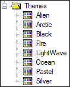
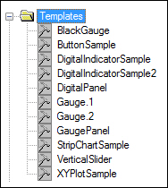
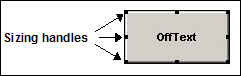
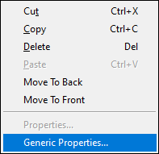
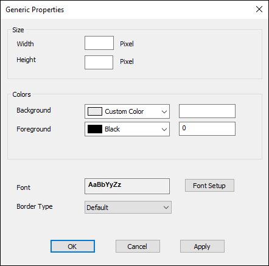
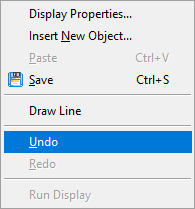
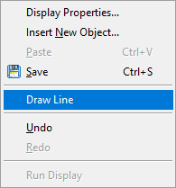
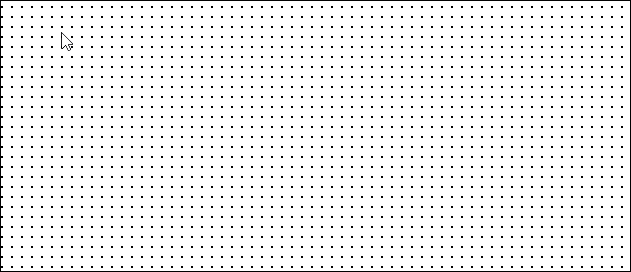

iTest User's Guide
iTest allows users to create on-screen displays, in which display objects can be added to view and manipulate channel data. Users can create the following types of displays:
To access displays, expand the Presentation folder in the Test Manager tree, and then expand the Displays folder. The folders for each display time are visible, as well as folders for Templates and Themes.
To create a new display, complete the procedure below:
For complete details on each display type, including a general description, field names/definitions and field properties, see the "Types of Display Objects" section further down on this page.
Standard displays are visible in the display area of iTest Console. They are accessible from the Command Bar, from a mailslot message to softpanel, or by selecting Displays/Standard from the toolbar.
You can use the following VCL to display a Standard Display:
"\\.\mailslot\Softpanel>>$UPPERDISPLAY;MyDisplay.dsp"
To create a new Standard display, complete the steps in the "Displays Overview" section above.
Dialog displays are custom-sized displays that are only accessible by using a mailslot message to the Softpanel. Dialog displays are floating windows with definite size and starting positions. Dialogs are typically used to notify an operator of some exceptional event, or to retrieve information from an operator. They are also used to provide task-specific controls.
 |
NOTE: | Size and position of Dialog Displays will be overridden at runtime if CustomDisplayShowLastPosition is enabled in the solution's powertek.ini. |
For more information about the CustomDisplayShowLastPosition powertek.ini setting, see ITest INI Options
You can use the following VCL to display a dialog:
"\\.\mailslot\Softpanel>>$CUSTOMDISPLAY;MyDialog.dsp"
Where MyDialog.dsp is the name of the Dialog display.
In addition to initializing dialogs using VCL, action buttons can be created on the toolbar to initialize them.
To programmatically close a dialog (for example, from a button on the dialog itself), send the DIE message to the display.
"\\.\mailslot\MyDisplay>>DIE"
This technique also works to close standard and right displays.
To create a new Dialog display, complete the steps in the "Displays Overview" section above.
The Right Display is typically a full size display that should fill the entire screen of an auxiliary monitor. In the past the auxiliary monitor was placed to the right of the operator console, hence the name Right Display. More than two monitors are supported, so Right Display does not necessarily have to be on the right. These displays appear on the Console if the Global Setting for number of monitors is greater than 1. Define the starting position and size using the display properties dialog. Starting position is relative to the 0,0 coordinate of the primary monitor defined in Windows.
To create a new Right display, refer to the Creating a Right Display document.
|
NOTE: | Creating a Right display is only applicable when employing a multi-monitor configuration. |
Themes allow you to specify colors, fonts, border types and other cosmetic settings for displays and their controls and then apply them to displays or templates you create or have already created. Themes deal only with the appearance of display objects, and not the logic or code behind them.
|
NOTE: | While themes cover most of the properties in a display object it does not necessarily cover all of them all of the time. One reason for this is that certain hard-coded VCL names don’t match the equivalent property in the theme editor. Another reason is that some display objects; e.g.. |
Themes

Templates are preconfigured controls or groups of controls that can be used as starting points for new displays. Template displays are particularly useful when a user has a control that they wish to use over and over again. In this case that user would create a template and then apply it to a new display.
Templates

There are several ways in which you can edit a display. You can edit the display properties of a display, and you can also add, remove or edit display objects from a display.
To modify the way the display will appear in the Console, follow the procedure below. Any changes to the display properties will affect all displays for a solution.
Display Property Descriptions
| Option | Description |
| Size | The Size & Position tab displays the default display size. To change the display size, enter the new height and width values in the Size fields |
| Display Label | This setting supersedes the name given to an Indexed Display (for an explanation of an Indexed Display see the Array Channels in Displays section). |
| Background Color | Click the Select button to choose the background color of your display. |
| Background Bitmap | Click Browse to display the Open dialog box in which you can select a bitmap to use for the display’s background. Bitmaps are imported at the size they were created and cannot be resized on the display. Bitmaps smaller than the display will be tiled to fill the display |
| Show Grid | Show Grid is selected by default. To change the size of the grid, enter new values (in pixels) in the Width and Height fields. |
| Snap To Grid | Controls will Snap To Grid marks by default. If you don’t want controls to snap to the grid, deselect this option |
You can add the following objects to your displays. For complete details on each display object, including a general description and purpose, field definitions and field properties, click the links in the table below.
Display Objects
| Control | Description |
| Gauges and meters (ADT Gauge) | Display channel data, target values, data quality, limit state and high/low values. For complete details on this object see ADT Gauge. |
| Buttons (ADT Button) | Send mailslot messages when turned on and off. Buttons can also adjust channel values and operate as check boxes and radio buttons. For complete details on this object, see ADT Button. |
| Drop-down lists (ADT Combo) | Display a picklist of values from which users can choose during runtime on the iTest Console, or to send a mailslot message. For complete details on this object, see ADT Combo Box. |
| Data Entry fields (ADT Data Entry) | The ADT Data Entry control allows you to configure a data entry field that accepts user-entered data during runtime on the iTest Console. The data that is entered can then be used to assign a value into a channel. You can also use the ADT Data Entry control to ask users a question that allows them to input test data that is not measured by the data acquisition system. For complete details on this object, see ADT Data Entry. |
| Digital Indicators (ADT Digital) | Display one or more channel values using different colors. These are based on any configured limits and/or warnings. For complete details on this object, see ADT Digital. |
| Indicators (ADT Indicator) | Display message strings and/or color bars that change depending upon the value of an associated database channel. For complete details on this object, see ADT Indicator. |
| Bars (ADT Bar) | Display a channel name and its value using a digital value and a bar that changes length to indicate the channel’s magnitude. If configured, operators can change the value on the bar using sliders. For complete details on this object, see ADT Bar. |
| Static images (ADT Image) | Display JPEG, BMP, ICO, or DIB images. For complete details on this object, including field definitions and properties, see ADT Image. |
| Text (ADT Title) | Display static text boxes. For complete details on this object, see ADT Title. |
| Separator lines (ADT Separator) | Adds structure to the display. In addition, you can change the control’s foreground and background colors to create depth on a display. For complete details on this object, see ADT Separator. |
| Stripcharts (ADT Strip Chart) | Graphically plot the status of selected database channels over time. Channel values display as a series of scrolling lines in the strip chart. For complete details on this object, see ADT Stripchart. |
| ADT Chart Plus | This control combines the features of both a XY Plot and a Strip Chart with some additional enhancements. The ADT Chart Plus control has two modes, XY Plot mode and Strip Chart mode. In XY Plot mode the control graphically plots the values of selected database channels over the specified X-axis channel. In Strip Chart mode, the control graphically plots the values of selected database channels over the specified time range. For complete details on this object, see ADT Chart Plus. |
| ADT Array Chart | The ADT Array Chart display object allows you to insert a chart object that will display all of the values of an array channel. For complete details on this object, see ADT Array Chart. |
| ActiveX dropdown | This dropdown allows you to choose and Insert an ActiveX control onto your display. This legacy feature is not actively supported and may or may not appear on your installation. |
|
NOTE: | You can use mailslot messages to change the properties of ADT display controls during runtime on the iTest Console (unless Permit Runtime Changes is turned off in the control’s properties). |
The following procedure provides general instructions on adding an object to your display. We will use the ADT Bar object as an example.
Once you have placed a display object on the Display Area, you can resize, move, or delete it.
After you place a display object on a screen, you can resize it using the sizing handles.
Sizing Handles

The middle handles on the top and bottom resize the height of the object. The middle handles on the left and right resize the width of the object. The handles in the four corners resize both the height and width of the object.
There are several ways in which you can move objects once they have been placed on the Display Area:
You can move or delete objects individually or as part of a group. You can also draw a box around a group like you can in Windows.
You can also select multiple objects in the display editor and then set common properties for each. For example, you can set the colors or fonts for a group of gauges or bar objects at the same time. Select the group you want to edit, right-click to select Generic Properties, and the following dialog will appear:
Generic Properties Right-Click Option

Generic Properties Dialog

This will allow you to set a consistent size, basic color scheme, font and border type to the selected objects. The Width and Height setting must be explicitly selected to override all of the current object sizes by also checking the Apply buttons for each.
Right-click the object or group of objects and then select Delete.
iTest allows you to undo and redo your actions in the Display Editor. Any change to a display can be undone, and the default depth for undo is 40 actions. The default depth can be changed by modifying the UndoDepth setting in the Powertek.ini file.
To undo or redo an action, simply right-click in the grid area of the Display Editor and choose the appropriate option. The Ctrl-Z shortcut key is supported for the undo option.
Undo/Redo Right-Click Options

There are three different ways to use array channel names in the display objects of a display.
$UPPERDISPLAY;MyDisplay[2] $UPPERDISPLAY;MyDisplay[2].dsp
All mailslot messages for launching displays support this syntax. This sets an index within the display that can be used by any of the display objects. Only display objects which were configured to display an unindexed array channel will use this display index. Display objects which use non-array channels or array channels with a static index will ignore the display index. When a display is launched with an index, the display title will change to show the index. The mailslot name of the display will also contain the index.
For example, you could create a display called MyDisplay which contains the following:
If you sent the message $UPPERDISPLAY;MyDisplay[2] to the softpanel then the display would be launched and the title would show MyDisplay[2].
|
NOTE: | A defined Display Label under the Display Properties dialog will supersede this title change. |
The gauge would then display the third value of arrayval because it doesn't have an index and would use the display index the display was launched with, which was 2 in this case. The indicator would display the value of the second value of the array channel because it contained a static index (the [1] part). The bar would just ignore the display index and show the normal value of HS1_SETPOINT because HS1_SETPOINT is not an array channel. To close the display, you would send a DIE message to the mailslot name \\.\\mailslot\MyDisplay[2].
Because the mailslot name contains the array index, you can launch multiple copies of the same display at the same time with different indexes.
If you don’t use an index when launching a display and the display contains objects configured with an unindexed array name, then that object will display the value of the first element of the array.
Each display also has a mailslot command that allows you to change the array indices being referenced in the display:
$SETARRAYINDEX <new index> Example: \\.\\mailslot\MyDisplay[2]>>$SETARRAYINDEX 5
This message can be sent to displays to change their array index. Doing so will also change the mailslot name of the display. So if the display file is test.dsp, and it was launched as test[2].dsp, it would have a mailslot name of \\.\mailslot\test[2]. Sending it as $SETARRAYINDEX 3 would change its index to 3 and the mailslot name would become \\.\mailslot\test[3].
A macro has been added to both the ADTButton and ADTCombo display objects to help send this variable-based mailslot. When constructing a message with these objects, use the macro $DISPLAYMAILSLOT$ to represent the current mailslot name.
You can select the displays that automatically open when the Console starts. You can designate one Standard, Right, and Dialog display as a startup display. You cannot designate multiple displays of the same type as startup displays. For example, you can specify both a Standard display and a Right display as startup displays, but you cannot choose two Standard displays as startup displays.
When you right click in the display editor now, there is a new option for Draw Line.
Draw Line Option

When you select this option and release, the hand icon will appear. Move the mouse to where you want to begin the line and then hold the left mouse button to draw the line.
Draw Line

To interact with a line that has already been drawn, hover the mouse over either end point of the line. Left click and drag to move the end point, or right click to do any of the following:
The following .INI option helps iTest runtime displays work better on touchscreen monitors:
ShowPopupKeyboardInDisplays=TRUE
|
NOTE: | This option is TRUE by default. |
The setting is only effective if the no keyboard mode has been set for Windows 7. Use the following instructions to enable this setting:
Use this keyboard to type without an actual keyboard.